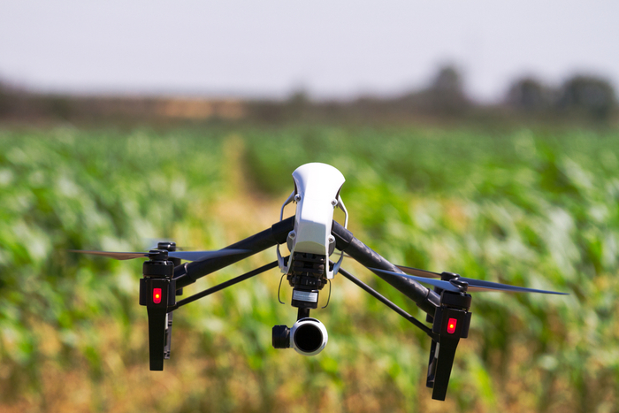
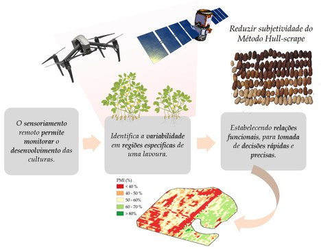

Os drones podem ser usados para pesquisa científica em ambientes extremos?
Explorando o potencial dos drones para pesquisa científica em ambientes extremos
O uso de drones em pesquisas científicas está se tornando cada vez mais popular, pois eles oferecem uma maneira única e econômica de explorar ambientes extremos. Os drones são capazes de acessar áreas muito perigosas ou de difícil acesso para humanos e podem fornecer dados valiosos que podem ser usados para informar a pesquisa.
Avanços recentes na tecnologia de drones permitiram aos pesquisadores explorar uma variedade de ambientes extremos, incluindo regiões polares, desertos e áreas de grande altitude. Os drones podem ser usados para coletar dados sobre temperatura, umidade e pressão do ar, bem como para tirar fotos aéreas e fazer vídeos. Esses dados podem ser usados para estudar os efeitos das mudanças climáticas, monitorar as populações de vida selvagem e avaliar a saúde dos ecossistemas.
Além de suas aplicações científicas, os drones também podem ser usados para fornecer ajuda humanitária em áreas remotas. Por exemplo, os drones podem ser usados para entregar suprimentos médicos em áreas de difícil acesso ou para prestar assistência em operações de busca e salvamento.
O potencial dos drones para pesquisa científica em ambientes extremos é vasto e a tecnologia está em constante evolução. À medida que a tecnologia continua a melhorar, os drones se tornarão ainda mais úteis para pesquisadores e organizações humanitárias. Com as ferramentas e o treinamento certos, os drones podem ser usados para explorar e entender o mundo ao nosso redor de maneiras que antes eram impossíveis.
Como os drones podem ajudar os cientistas a coletar dados em ambientes extremos
Nos últimos anos, os drones se tornaram cada vez mais populares para uma variedade de aplicações, desde fotografia até serviços de entrega. Agora, os cientistas estão começando a explorar o potencial dos drones para coletar dados em ambientes extremos.
Os drones são adequados para a coleta de dados em ambientes extremos porque podem ser implantados com rapidez e facilidade e podem acessar áreas de difícil ou perigoso alcance humano. Por exemplo, os drones podem ser usados para coletar dados de áreas remotas do oceano, como fontes hidrotermais de profundidade, ou do topo de montanhas e outros locais de difícil acesso.
Drones também podem ser usados para coletar dados em ambientes perigosos, como vulcões ativos ou áreas contaminadas por radiação. Ao usar drones, os cientistas podem coletar dados sem se colocar em perigo.
Além disso, os drones podem ser equipados com uma variedade de sensores e instrumentos, como câmeras, termômetros e monitores de qualidade do ar. Isso permite que os cientistas coletem uma ampla gama de dados, desde temperatura e qualidade do ar até imagens e vídeos.
Finalmente, drones podem ser usados para coletar dados por longos períodos de tempo. Isso é especialmente útil para monitorar mudanças em um ambiente ao longo do tempo, como os efeitos das mudanças climáticas ou a disseminação de uma espécie invasora.
No geral, os drones oferecem uma ferramenta poderosa para os cientistas coletarem dados em ambientes extremos. Ao usar drones, os cientistas podem acessar áreas difíceis ou perigosas para os humanos, coletar uma ampla gama de dados e monitorar as mudanças ao longo do tempo.
Os benefícios do uso de drones para pesquisas científicas em ambientes extremos
O uso de drones para pesquisas científicas em ambientes extremos tem se tornado cada vez mais popular nos últimos anos. Isso se deve aos inúmeros benefícios que os drones oferecem em termos de coleta de dados, segurança e custo-benefício.
Os drones são capazes de coletar dados em ambientes extremos que, de outra forma, seriam inacessíveis ou muito perigosos para os humanos explorarem. Por exemplo, os drones podem ser usados para coletar dados de áreas remotas, como o Ártico ou a Antártida, onde as temperaturas podem ser extremamente baixas e o terreno pode ser traiçoeiro. Os drones também podem ser usados para explorar áreas muito profundas ou muito altas para os humanos alcançarem, como as profundezas do oceano ou o topo das montanhas.
Além de fornecer acesso a dados em ambientes extremos, os drones também oferecem um maior grau de segurança. Ao usar drones, os pesquisadores podem evitar situações potencialmente perigosas. Isso é especialmente importante em áreas onde o ambiente é imprevisível e perigoso.
Finalmente, os drones também são econômicos. Eles são relativamente baratos para comprar e manter e podem ser usados para coletar dados de forma rápida e eficiente. Isso os torna uma opção atraente para pesquisadores que trabalham com um orçamento apertado.
No geral, o uso de drones para pesquisas científicas em ambientes extremos traz inúmeros benefícios. Eles fornecem acesso a dados que, de outra forma, seriam inacessíveis ou muito perigosos para os humanos explorarem, oferecem um maior grau de segurança e são econômicos. Como tal, os drones estão se tornando uma ferramenta cada vez mais popular para pesquisadores em ambientes extremos.
Os desafios do uso de drones para pesquisas científicas em ambientes extremos
O uso de drones para pesquisas científicas em ambientes extremos tem se tornado cada vez mais popular nos últimos anos. No entanto, esta tecnologia não é isenta de desafios.
Um dos principais desafios do uso de drones para pesquisas científicas em ambientes extremos é a dificuldade de controlar o drone nessas condições. Ambientes extremos costumam ter padrões climáticos imprevisíveis, o que pode dificultar o controle do drone. Além disso, ambientes extremos costumam ter ventos fortes, o que pode dificultar a manutenção do drone no ar.
Outro desafio do uso de drones para pesquisas científicas em ambientes extremos é a dificuldade de coleta de dados. Ambientes extremos costumam ter acesso limitado a redes de comunicação, o que pode dificultar a transmissão de dados do drone para a equipe de pesquisa. Além disso, ambientes extremos geralmente têm acesso limitado a fontes de energia, o que pode dificultar a manutenção do drone por longos períodos de tempo.
Por fim, ambientes extremos geralmente têm acesso limitado a recursos, o que pode dificultar o reparo ou a substituição de drones danificados. Isso pode ser especialmente problemático se o drone for danificado durante a realização de pesquisas em um ambiente extremo.
Apesar desses desafios, os drones ainda são uma ferramenta valiosa para a pesquisa científica em ambientes extremos. Com a preparação e o planejamento corretos, os pesquisadores podem usar drones para coletar dados valiosos mesmo nas condições mais extremas.
O futuro dos drones para pesquisa científica em ambientes extremos
O uso de drones para pesquisa científica em ambientes extremos é um campo de estudo em rápido crescimento. À medida que a tecnologia avança, os drones estão se tornando cada vez mais capazes de operar em condições extremas, como grandes altitudes, temperaturas extremas e terrenos perigosos. Isso abriu um leque de possibilidades para os cientistas explorarem e estudarem áreas que antes eram inacessíveis.
Avanços recentes na tecnologia de drones permitiram que drones fossem usados para uma variedade de aplicações de pesquisa científica. Por exemplo, os drones podem ser usados para coletar dados de locais remotos, como geleiras, desertos e oceanos. Eles também podem ser usados para monitorar a vida selvagem, pesquisar terrenos e mapear terrenos. Além disso, os drones podem ser usados para coletar amostras de ambientes perigosos, como vulcões e instalações nucleares.
O potencial dos drones para pesquisas científicas em ambientes extremos é imenso. Os drones podem ser usados para coletar dados em áreas muito perigosas para o acesso humano, como vulcões ativos ou instalações nucleares. Eles também podem ser usados para monitorar a vida selvagem em áreas remotas, como o Ártico ou a Antártica. Além disso, os drones podem ser usados para pesquisar terrenos e mapear terrenos em áreas de difícil acesso, como desertos ou montanhas.
O futuro dos drones para pesquisa científica em ambientes extremos é brilhante. À medida que a tecnologia continua avançando, os drones se tornarão cada vez mais capazes de operar em condições extremas. Isso abrirá um leque de possibilidades para os cientistas explorarem e estudarem áreas que antes eram inacessíveis. Além disso, o uso de drones para pesquisas científicas em ambientes extremos ajudará a reduzir o custo e o risco associados aos métodos tradicionais de pesquisa.
No geral, o uso de drones para pesquisa científica em ambientes extremos é um campo de estudo em rápido crescimento. Com o avanço da tecnologia, os drones se tornarão cada vez mais capazes de operar em condições extremas, abrindo um leque de possibilidades para os cientistas explorarem e estudarem áreas antes inacessíveis. O futuro dos drones para pesquisas científicas em ambientes extremos é brilhante e o potencial para novas descobertas é imenso.
|
Drones e inteligência artificial substituem seres humanos em nova metodologia que analisa maturação de lavoura de amendoim
Sistema desenvolvido em parceria por pesquisadores da Unesp e da Universidade da Georgia é capaz de fazer previsões com índice de acerto superior a 90%.

Uma colaboração internacional entre pesquisadores da Unesp e da Universidade da Georgia, nos EUA, desenvolveu um método que combina sensoriamento remoto e inteligência artificial para otimizar a colheita do amendoim. Este novo modelo permite que, através de imagens multiespectrais capturadas por drones em plantações, seja possível calcular índices para prever o ponto de maturação do amendoim e colhê-lo no momento mais adequado, evitando perdas.
Uma das grandes dificuldades em relação à colheita do amendoim é que, diferentemente de outras culturas como o milho e a soja, os frutos da planta ficam sob a terra. Isso impede que se possa estimar sua maturação apenas pelo olhar. O método mais usado pelos produtores envolve arrancar a planta do chão, destacar suas vagens e raspar seu exocarpo (uma espécie de ‘casca’), a fim de identificar se os grãos já estão escuros o suficiente, como indicação de maturidade.
Esse método demanda grande quantidade de trabalho manual e de tempo. E, embora seja o método consagrado, é comum que mesmo naquelas plantas avaliadas como prontas para colher haja alguns grãos que ainda não estão efetivamente maduros, e outros que até já se desprenderam da planta por excesso de maturidade. Ou seja, há um componente de desperdício nesse processo. Em busca de uma solução, na forma de um método mais eficiente, os pesquisadores brasileiros e norte-americanos se reuniram e conduziram estudos em campos de plantação de amendoim no sul da Georgia.
Drones e redes neurais
O método desenvolvido emprega a observação via drone, cerca de 90 dias após o início da semeadura do amendoim. O drone sobrevoa a plantação e captura imagens multiespectrais a cada sete dias. As imagens multiespectrais capturam a refletância das plantas em diversas faixas do espectro eletromagnético, que incluem as cores vermelha e verde, o infravermelho próximo (NIR) e a borda do vermelho (RE). A partir das fotos, as taxas de cada banda que integram a imagem são convertidas em diferentes índices matemáticos. Esses índices permitem aos pesquisadores obter diversas informações sobre a plantação, tais como o teor de clorofila nas plantas ou a atividade fotossintética que elas apresentam.
“Inserimos esSes índices no nosso modelo de inteligência artificial, para que ela pudesse aprender a partir dessas informações. A seguir, passamos a fazer múltiplas combinações entre os índices para ver se dessa forma seria possível aumentar a acurácia da predição da maturação do amendoim. E conseguimos”, diz o agrônomo Adão Felipe dos Santos, que desenvolveu esse trabalho como parte de seu doutorado e hoje é docente na Universidade Federal de Lavras.
As redes neurais artificiais também foram abastecidas com as informações sobre a própria colheita obtidas em solo. Isso permitiu a elas desenvolver parâmetros de correlação entre os cálculos feitos digitalmente, a partir de dados das fotografias, e a realidade concreta dos grãos coletados.
Se os resultados das análises feitas pelo sistema da IA coincidem com a proporção de amostras maduras colhidas, isso indica que o software foi bem-sucedido em estimar a maturação daquela plantação com precisão. O novo sistema conseguiu obter resultados com um nível de precisão superior a 90%, e erro abaixo de 10%.

A participação do clima na maturação
Mas usar apenas os índices de vegetação obtidos através das fotografias multiespectrais feitas por drones seria insuficiente. Se analisados fora de um contexto mais amplo, os índices derivados a partir das imagens não poderiam resultar em estimativas com a precisão desejada. Por isso, os pesquisadores também incluíram na equação uma outra categoria de índice, denominada ‘graus-dia acumulados (GDA)’, que leva em conta a temperatura da região da plantação durante todo o ciclo.
“Simplificadamente, o índice de GDA é uma quantidade determinada de calor que a planta precisa acumular durante o ciclo de crescimento para poder se desenvolver. A temperatura-base do amendoim é 13.3 ºC, e isso significa que, quando o dia está com uma temperatura acima disso, a planta vai acumular este ‘excesso de calor’ de forma a avançar seu processo de desenvolvimento. Então, à medida que se passam os dias, a planta vai acumulando graus-dia para poder se desenvolver”, explica Santos.
Esse índice representa uma evolução em relação ao método da contagem simples de “dias após a semeadura”, também muito utilizado nas plantações de amendoim, que apenas estima que a colheita deve ser feita após um número predeterminado de dias após o início da semeadura (110 dias, por exemplo). O índice de GDA, por sua vez, é obtido através de uma equação matemática que combina as temperaturas máxima e mínima de cada dia, a temperatura-base do amendoim, a evapotranspiração e a irrigação da plantação. Assim, quando o amendoim acumular um número determinado de graus-dia acumulados (2500 graus-dia, no caso específico deste estudo realizado nos EUA), significa que deve estar próximo da maturação ideal.
Vale ressaltar que, justamente pelo fato de cada local ter condições climáticas diferentes, o número de graus-dia acumulados necessário para determinar a maturação do amendoim varia em cada região.
Parceria internacional
A etapa da coleta de amostras nas plantações ocorreu durante o verão dos anos de 2018 e 2019, quando Santos estava fazendo doutorado pelo Programa de Pós-Graduação em Agronomia (Produção Vegetal) na Unesp Jaboticabal e passava por um período sanduíche na Universidade da Georgia. Estas são as melhores estações para o plantio do amendoim, dadas as condições de temperatura mais adequadas, sendo o solo arenoso dos campos do sul da Georgia também dentro dos padrões que favorecem o crescimento desta cultura.
A parceria com a Universidade da Georgia foi construída pelo então orientador de Adão, Rouverson Pereira Silva, que é vice-chefe do departamento de Engenharia e Ciências Exatas da Faculdade de Ciências Agrárias e Veterinárias de Jaboticabal. Silva mantinha contato há tempos com George Vellidis, professor da Universidade da Georgia, sendo que esta parceria já havia proporcionado até mesmo aulas presenciais de docentes norte-americanos na Unesp Jaboticabal e o intercâmbio de alunos unespianos para a Georgia.
“Tive a oportunidade de fazer um pós-doutorado na Georgia em 2017. Na volta, encaminhei dois alunos para cursarem o doutorado sanduíche lá, e o Adão foi o terceiro. Só que antes de enviar o Adão, eu trouxe o professor Vellidis pra cá, juntamente com a professora Cristiane Pillon, que também é da mesma universidade, e criamos aqui uma disciplina de Produção Vegetal, voltada para a produção de amendoim, no nosso PPG. Porque são poucos professores que trabalham com a cultura do amendoim, embora ela seja importantíssima para a região”, diz Silva.
Foi nesse intercâmbio que surgiu a ideia da pesquisa envolvendo o uso de sensoriamento remoto e inteligência artificial para aprimorar a colheita do amendoim. “Conversando com o professor Vellidis, ele falou que queria trabalhar com a estimativa de maturação usando drones, e nós já estávamos fazendo pesquisas no Brasil usando imagens de satélite”, diz Silva. Coube a Santos liderar o estudo.
Adão Santos concluiu o doutorado em 2019, mas mantém a parceria com Rouverson Silva. Juntos, desenham os próximos passos da nova metodologia. “Estamos trabalhando para aperfeiçoar estes modelos de IA, tanto para Minas Gerais quanto para São Paulo. Aqui no Brasil, não temos muitas estações meteorológicas ‘puras’, como as que são operadas por universidades ou pelo próprio Inmet (Instituto Natural de Meteorologia), que são acessíveis para os produtores utilizarem e acompanharem os dados meteorológicos. Então, usamos dados da Nasa Power, num projeto financiado pela Fapemig. O objetivo é desenvolver um modelo mais aplicável que possa se basear em imagens de satélites geradas aqui em nosso país.”
|